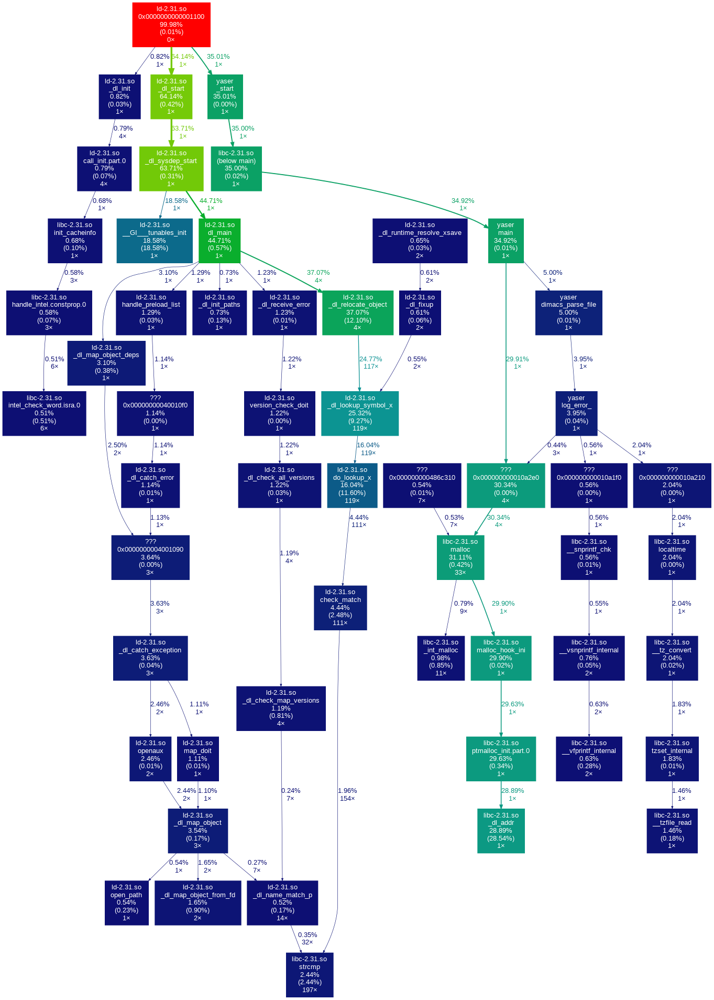

<!DOCTYPE html>
<html class="writer-html5" lang="en" >
<head>
  <meta charset="utf-8" /><meta name="generator" content="Docutils 0.17.1: http://docutils.sourceforge.net/" />

  <meta name="viewport" content="width=device-width, initial-scale=1.0" />
  <title>Callgrind &mdash; YASER Documentation</title>
      <link rel="stylesheet" href="../_static/pygments.css" type="text/css" />
      <link rel="stylesheet" href="../_static/css/theme.css" type="text/css" />
  <!--[if lt IE 9]>
    <script src="../_static/js/html5shiv.min.js"></script>
  <![endif]-->
  
        <script data-url_root="../" id="documentation_options" src="../_static/documentation_options.js"></script>
        <script src="../_static/jquery.js"></script>
        <script src="../_static/underscore.js"></script>
        <script src="../_static/doctools.js"></script>
    <script src="../_static/js/theme.js"></script>
    <link rel="index" title="Index" href="../genindex.html" />
    <link rel="search" title="Search" href="../search.html" />
    <link rel="next" title="Complexity" href="complexity.html" />
    <link rel="prev" title="Benchmark" href="benchmark.html" /> 
</head>

<body class="wy-body-for-nav"> 
  <div class="wy-grid-for-nav">
    <nav data-toggle="wy-nav-shift" class="wy-nav-side">
      <div class="wy-side-scroll">
        <div class="wy-side-nav-search" >
            <a href="../index.html" class="icon icon-home"> YASER
          </a>
<div role="search">
  <form id="rtd-search-form" class="wy-form" action="../search.html" method="get">
    <input type="text" name="q" placeholder="Search docs" />
    <input type="hidden" name="check_keywords" value="yes" />
    <input type="hidden" name="area" value="default" />
  </form>
</div>
        </div><div class="wy-menu wy-menu-vertical" data-spy="affix" role="navigation" aria-label="Navigation menu">
              <ul class="current">
<li class="toctree-l1 current"><a class="reference internal" href="index.html">Reports</a><ul class="current">
<li class="toctree-l2"><a class="reference internal" href="address-sanitizer.html">Address Sanitizer</a></li>
<li class="toctree-l2"><a class="reference internal" href="benchmark.html">Benchmark</a></li>
<li class="toctree-l2 current"><a class="current reference internal" href="#">Callgrind</a></li>
<li class="toctree-l2"><a class="reference internal" href="complexity.html">Complexity</a></li>
<li class="toctree-l2"><a class="reference internal" href="gnu-profiler.html">GNU Profiler</a></li>
<li class="toctree-l2"><a class="reference internal" href="memory-sanitizer.html">Memory Sanitizer</a></li>
<li class="toctree-l2"><a class="reference internal" href="ub-sanitizer.html">Undefined Behavior Sanitizer</a></li>
<li class="toctree-l2"><a class="reference internal" href="unit-test.html">Unit Test</a></li>
<li class="toctree-l2"><a class="reference internal" href="valgrind-report.html">Valgrind</a></li>
<li class="toctree-l2"><a class="reference external" href="https://marcluque.github.io/YASER/_static/reports/gcov-report/index.html">GCov</a></li>
</ul>
</li>
</ul>

        </div>
      </div>
    </nav>

    <section data-toggle="wy-nav-shift" class="wy-nav-content-wrap"><nav class="wy-nav-top" aria-label="Mobile navigation menu" >
          <i data-toggle="wy-nav-top" class="fa fa-bars"></i>
          <a href="../index.html">YASER</a>
      </nav>

      <div class="wy-nav-content">
        <div class="rst-content">
          <div role="navigation" aria-label="Page navigation">
  <ul class="wy-breadcrumbs">
      <li><a href="../index.html" class="icon icon-home"></a> &raquo;</li>
          <li><a href="index.html">Reports</a> &raquo;</li>
      <li>Callgrind</li>
      <li class="wy-breadcrumbs-aside">
            <a href="../_sources/reports/callgrind.rst.txt" rel="nofollow"> View page source</a>
      </li>
  </ul>
  <hr/>
</div>
          <div role="main" class="document" itemscope="itemscope" itemtype="http://schema.org/Article">
           <div itemprop="articleBody">
             
  <section id="callgrind">
<span id="reports-callgrind"></span><h1>Callgrind<a class="headerlink" href="#callgrind" title="Permalink to this headline"></a></h1>
<div class="highlight-C notranslate"><div class="highlight"><pre><span></span>==3745== Callgrind, a call-graph generating cache profiler
==3745== Copyright (C) 2002-2017, and GNU GPL&#39;d, by Josef Weidendorfer et al.
==3745== Using Valgrind-3.15.0 and LibVEX; rerun with -h for copyright info
==3745== Command: ./yaser
==3745== 
--3745-- warning: L3 cache found, using its data for the LL simulation.
--3745-- warning: specified LL cache: line_size 64  assoc 11  total_size 37,486,592
--3745-- warning: simulated LL cache: line_size 64  assoc 18  total_size 37,748,736
==3745== For interactive control, run &#39;callgrind_control -h&#39;.
[16:04:04][YASER - ERROR][dimacs_parser.c]: No such file or directory
==3745== 
==3745== Events    : Ir Dr Dw I1mr D1mr D1mw ILmr DLmr DLmw Bc Bcm Bi Bim
==3745== Collected : 251092 56804 16090 1551 2793 696 1513 2187 631 51038 5901 485 205
==3745== 
==3745== I   refs:      251,092
==3745== I1  misses:      1,551
==3745== LLi misses:      1,513
==3745== I1  miss rate:    0.62%
==3745== LLi miss rate:    0.60%
==3745== 
==3745== D   refs:       72,894  (56,804 rd + 16,090 wr)
==3745== D1  misses:      3,489  ( 2,793 rd +    696 wr)
==3745== LLd misses:      2,818  ( 2,187 rd +    631 wr)
==3745== D1  miss rate:     4.8% (   4.9%   +    4.3%  )
==3745== LLd miss rate:     3.9% (   3.9%   +    3.9%  )
==3745== 
==3745== LL refs:         5,040  ( 4,344 rd +    696 wr)
==3745== LL misses:       4,331  ( 3,700 rd +    631 wr)
==3745== LL miss rate:      1.3% (   1.2%   +    3.9%  )
==3745== 
==3745== Branches:       51,523  (51,038 cond +    485 ind)
==3745== Mispredicts:     6,106  ( 5,901 cond +    205 ind)
==3745== Mispred rate:     11.9% (  11.6%     +   42.3%   )
</pre></div>
</div>

</section>


           </div>
          </div>
          <footer><div class="rst-footer-buttons" role="navigation" aria-label="Footer">
        <a href="benchmark.html" class="btn btn-neutral float-left" title="Benchmark" accesskey="p" rel="prev"><span class="fa fa-arrow-circle-left" aria-hidden="true"></span> Previous</a>
        <a href="complexity.html" class="btn btn-neutral float-right" title="Complexity" accesskey="n" rel="next">Next <span class="fa fa-arrow-circle-right" aria-hidden="true"></span></a>
    </div>

  <hr/>

  <div role="contentinfo">
    <p>&#169; Copyright 2022, Marc Luqué.</p>
  </div>

  Built with <a href="https://www.sphinx-doc.org/">Sphinx</a> using a
    <a href="https://github.com/readthedocs/sphinx_rtd_theme">theme</a>
    provided by <a href="https://readthedocs.org">Read the Docs</a>.
   

</footer>
        </div>
      </div>
    </section>
  </div>
  <script>
      jQuery(function () {
          SphinxRtdTheme.Navigation.enable(true);
      });
  </script> 

</body>
</html>